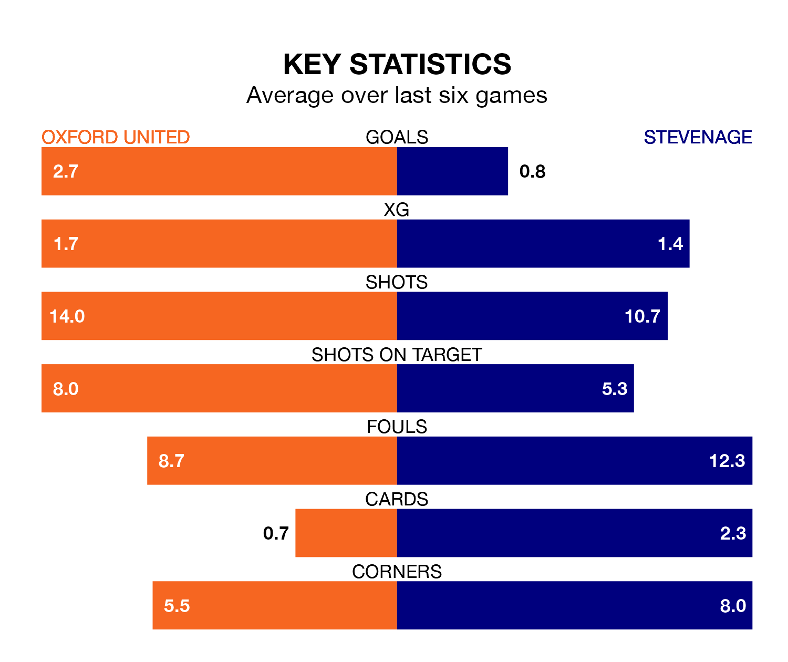

Oxford United host Stevenage on Friday at the Kassam Stadium in EFL League One.
In their last league match, on Tuesday, Oxford lost to Lincoln City 1-0 at home.
Stevenage also lost, 2-1 at home against Burton Albion on Saturday, with Kane Hemmings scoring their goals.
With 76 goals in 44 games so far this season, Oxford are scoring more than average in the league with 1.7 goals per game. And they are conceding fewer than average, letting in 54 goals at a rate of 1.2 per game.
Stevenage, meanwhile, are below average scorers, with 1.2 goals per game, compared to a league average of 1.3. They have conceded 1.0 goal per game.
In Jamie Reid, the Boro have one of the league's most on-form strikers so far this season. He has notched 18 goals in 41 appearances, to sit third in the scoring charts.
His goal rate of one every 187 minutes is quicker than that of Mark Thomas Harris, United's top scorer with a goal every 232 minutes, and a total of 14 goals in 41 games.
The Us are sixth in the table after 44 games, of which they have won 21 and drawn 10, earning 73 points.
The visitors are three places behind the home side in ninth, with 18 wins and 13 draws putting them on 67 points.
Oxford are in good form in EFL League One, with four wins and a draw from their last six games.
With a win and three draws over that period, Stevenage's form is much worse – they have taken six points from 18, compared to Oxford's 13.
Friday's match will be refereed by Tom Nield, who has taken charge of seven EFL League One games so far this season, issuing one red card and booking 34 players. He has awarded two penalties.
The last Oxford game Nield refereed was a 2-1 home win against Cambridge United on December 26. He is yet to oversee a match featuring Stevenage this season.
Updated: 15:40 (UTC), 18/04/24